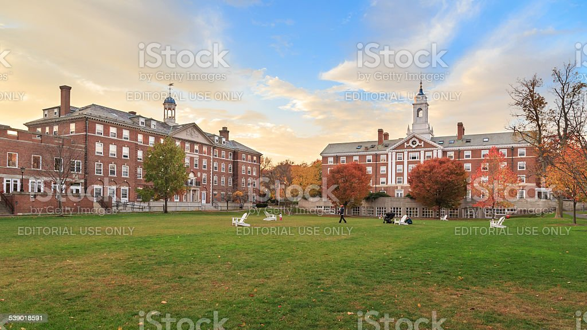

This is page for top schools
Let's talk about these colleges

During the antebellum era, well after the end of slavery in Massachusetts, and even after the 13th Amendment
to the US Constitution conferred emancipation nationwide in 1865, vestiges—or legacies—of the system lingered.
Legacies of slavery such as exclusion, segregation, and discrimination against Blacks in employment, voting,
housing, healthcare, public accommodations, criminal punishment, and education, among other areas, persisted
in the South as well as the North.Go to footnote 38 detail Notwithstanding the Commonwealth’s Revolutionary War
heritage as birthplace of the colonists’ struggle for liberty, its celebrated antislavery activists,
and its many brave Union veterans of the Civil War,
Go to footnote 39 detail racial inequality flourished in Massachusetts—and at Harvard—as Blacks
struggled for equal opportunity and full citizenship.
Harvard's first-ever Global Day of Service expands on an annual Harvard College orientation event
that welcomes first year students to their new communities of Boston, Cambridge, and Somerville through service.
Through this program we engage a broad range of students, community partners, faculty, staff, and alumni will work
together to support virtual volunteer projects. This community-wide effort introduces incoming first-year students
to a vibrant culture of public service programs at Harvard. Throughout this program, we will highlight several ways
that all participants can stay civically engaged throughout the year.
The Global Day of Service unites students, staff, faculty, alums, and community partners around a shared purpose.
Football was one sport that students participated in at Harvard University.
It was organized by students although it was banned twice because it was violent and dangerous.
The alumni of the university became more involved in the sport, therefore, making football
a legacy for Harvard University. Harvard Crimson is also an athletic team of Harvard University.
The Harvard baseball program began competing in 1865. It has appeared in the four College World Series.
Harvard’s men’s basketball made an appearance in 2014 in NCAA Division I Men’s Basketball Tournament and beat Cincinnati.